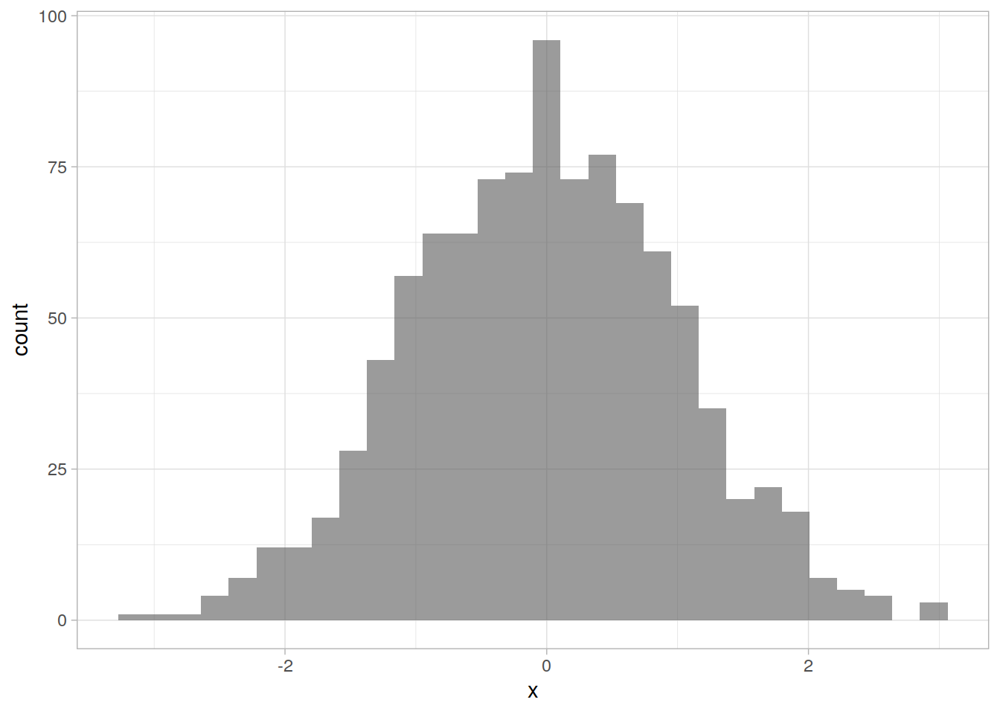
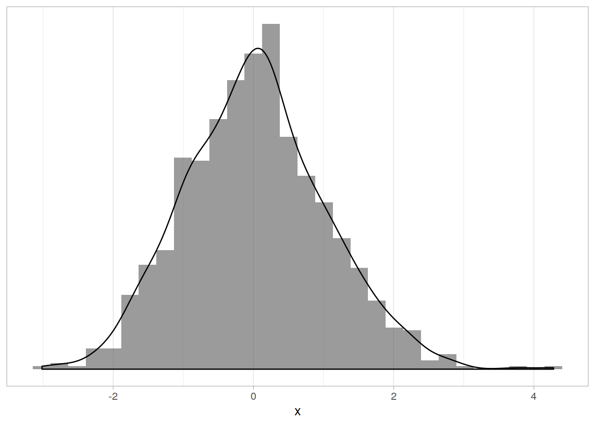
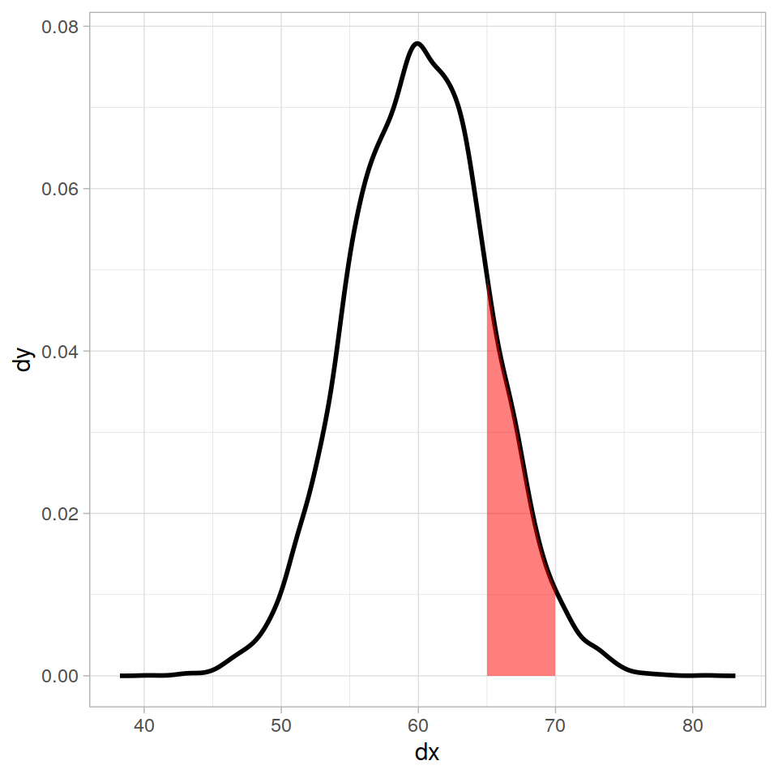
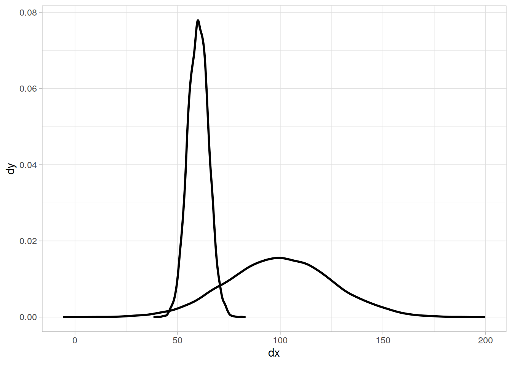

Chapter 2 Normal distributions & probability
Instructions
- In this two-hour lab we will go through worked examples in the first hour, and you will attempt to answer some questions in the second hour.
- The Rmarkdown file for this week is here.
Learning outcomes
LO1.
LO2.
Reading
2.1 Recap
2.2 Walkthrough
- how many times do you look at your phhone in a day?
a lot of distributions we have seen have looked like this. this is not a coincidence.
under general circumstancesm distribution of many statistics will follow this pattern.
we have talked about the properties of these shapes, and described them as symettric and bellshaped.
an example
## `stat_bin()` using `bins = 30`. Pick better value with `binwidth`.
2.2.1 density curves
theoretical model for a distribution is a density curve
tibble(x=rnorm(1000,0,1)) %>%
ggplot(aes(x=x))+
geom_histogram(aes(y=..density..),alpha=.6)+
geom_density()+
theme_light()+
scale_y_continuous(NULL, breaks=NULL)## `stat_bin()` using `bins = 30`. Pick better value with `binwidth`.
calculating from a known distribution: the proportion of samples which have a mean of less than 60.
hint (we know that there are 1000 means… )

We can count how many samples have a mean of <60. We can sum up the counts in all the bars below 60. 3+4+10+26+50+68 = 161 161/1000 = 0.161, so 16% of the means are <60.
estimating about a theoretical distribution proportion of … which are:
less than 100

between x and y 
2.2.2 normal but different
density curves can take any shape, but the normal density curve has a special form which looks bellshaped.
take a look back at the previous two curves.. they look pretty similar, but that’s just because of the axes of the graph changing..
ggplot()+
geom_line(data=d, aes(x=dx,y=dy),lwd=1)+
geom_line(data=d1, aes(x=dx,y=dy),lwd=1)+
theme_light()
2.2.3 parameters
applet?
\[ N(\mu, \sigma) \]
percentiles probabilities of normal curves
2.2.4 standard normal
transforming \(N(\mu,\sigma)\) to \(N(0,1)\)
steps + minus the mean from each value + divide by the standard deviation
the values are now..
2.2.5 z-scores
\[ z = \frac{x-\mu}{\sigma} \]
we can use z-scores to identify which scores are more unusual than others.
people walk 10000 steps a day. SD of 3000. So this means that 95% of people walk between 4100 and 15900 steps per day.
people drink 2500ml of water a day, SD of 500. 95% of people drink between 1520ml and 3480ml of water a day
is it more unusual for someone to walk only 6000 steps a day, or for someone to drink only 1700ml of water a day?
## [1] -1.333333## [1] -1.6